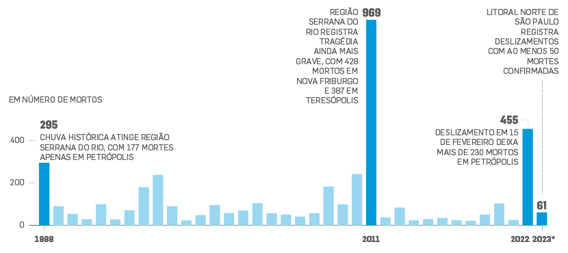

{kind=link}

Escala de movimento de escorregamento de VARNES (CRUDEN e VARNES, 1996)
Desenvolver um sistema de sensoriamentoremoto de deslizamento de terra, com o OBJETIVO em evitar catástrofes, principalmente em regiôes urbanas, evitando ao maximo ferimentos e fatalidade.
Segundo uma pesquisa feita pelo ITP (Instituto de pesquisa tecnológica do Estado de São Paulo) feito em 2022, de junho de 1988, a junho de 2022, mais de 4.146 pessoas mortas por deslizamento de terra. Sendo entre todos os estados do Brasil, o Rio de Janeiro é o que tem mais fatalidades, com 2.143 mortes. 3,8 vezes maior que o segundo lugar, que fica com o estado de São Paulo com 567 mortes.
A ocorrência de deslizamentos de terra é possível de ser evitada, incluindo seus danos econômicos e humanos, por meio da implementação de políticas de planejamento urbano e territorial. Portanto, a promoção de políticas públicas em setores como habitação e assistência social possibilitam a atenuação dos estragos causados pelos deslizamentos de terra, além de resultar em melhoria na qualidade de vida da população. Ademais, para evitar o fenômeno, é necessário preservar as condições naturais do meio ambiente. Nesse sentido, a preservação da vegetação nativa, a conservação das matas ciliares (tipos de vegetação que circundam curso de água). a deposição correta do lixo e a não sedimentação do solo são pontos importantes que minimizam os eventos de deslizamento de terra. Assim, de forma geral, deve-se evitar ao máximo a ocupação humana em zonas muito declivosas e ambientalmente frágeis, como encostas e margens de rios.
Sim, já existem diversas tecnologias com o Instituto de minimizar os danos causados pelos deslizamentos:
Escala de movimento de escorregamento de VARNES (CRUDEN e VARNES, 1996)